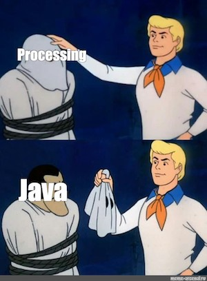

Transition to Java
Assumed Knowledge
Learning Outcomes
- Be able to compile and run basic Java programs
- Understand the correspondance between Processing and Java
- Know the phases of compiling and running Java code.
Processing was a restricted version of Java all-along.

Author: Gaurav Gupta
Graduation
We have cut our teeth with Processing, but now it is time to graduate to the same tools that professional developers use. Processing was a simplified version of two tools we are going to embrace:
- Java: One of the most popular programming language on the planet. Processing is a simplified subset of Java that simplified our first steps.
- IDE * Eclipse (Supported, use extensively in the lectures), or, * Visual Studio Code, or, * IntelliJ
How do programs run in Java (compared to Processing)
Remind yourself how processing ran programs if you need to refresh your memory.
In Java, you must perform two steps yourself to get your program to run:
- Compile. The
javaccompiler will look for errors and convert your code to a runnable form (called bytecode).javacwill put this form into a.classfile for you. - Run. The
javaprogram will run the.classfile for you.
You should have become familiar with both steps already, but they were both done for you when hitting “play” in Processing. Now you have to do each yourself (mostly).

What does a Java Program look like?
All Java programs have the following structure
public class Main {
public static void main(String[] args){
<CODE GOES HERE>
}
}
When you began writing Processing code you didn’t really understand setup and draw, you just used them, the same is true of this “Main class” and “main function”. For now, just put all your code in main, it will run once when the program runs (just like code in setup used to) and the full story will become clear later.
Note: You can’t change the name of the main function, but you can change the name of the Main class, just make sure the file-name you are using (“Main.java”) matches the class name exactly.
Compiling and running java programs from command prompt or terminal
After installing Java SDK, you can write a code in a basic text editor (like notepad, atom, sublime) and then compile and run Java programs from command prompt or terminal.
A java source file HelloWorld.java is compiled as
javac HelloWorld.java
Once it is compiled, there will be java class file generated with name HelloWorld.class. What you execute is this class file, as,
java HelloWorld
This is a good skill and the benefits of doing this over using an IDE like Eclipse include,
-
reducing reliance on auto-complete done by Eclipse.
-
not relying on Eclipse to tell you each time there is a syntactical error.
-
program will not compile, and therefore the class file will not be generated to execute if there is a syntactical error.
-
Helps with pen and paper design.
Let’s say, following are the contents of HelloWorld.java
public class HelloWorld {
public static void main(String[] args) {
System.out.println(5+);
}
}
When you compile the program, you’ll get the following message,
I-2:intro gauravgupta$ javac HelloWorld.java
HelloWorld.java:3: error: illegal start of expression
System.out.println(5+);
^
1 error
I-2:intro gauravgupta$
You can see that it points to the line number (3) with syntactical errors so you can correct them. In this case, we change the 5+ to 5+3, and our program compiles, and executes, successfully.
public class HelloWorld {
public static void main(String[] args) {
System.out.println(5+3);
}
}
Software to install and first program
Install the following software in the order below. You will be asked to choose your operating system for each software, and whether it’s 32-bits or 64-bits. If not sure, use this link to determine the same.
-
Java Standard Edition (Java SE), previously known as Java Standard Development Kit (Java SDK). Current version (on the date of writing this document):
16.0.2. You’ll be fine as long as you have version 8 or above. -
Eclipse IDE for Java developers. Current version (on the date of writing this document):
2021-06.
NOTE: You are free to use any other IDE besides Eclipse (such as Visual Studio Code or NetBeans or IntelliJ) if you want. However, we shall be doing all screencasts and video tutorials using Eclipse.
First java program
Once you have installed Java SE, you are ready to write and run Java programs. First we’ll learn how to write and run a java program from command prompt.
Open notepad and type the following code in it.
public class MyFirstProgram {
public static void main(String[] args) {
System.out.println("Hello world!");
}
}
Save the file as MyFirstProgram.java (case sensitive).
Open command prompt (or terminal on Mac), go to the folder in which MyFirstProgram.java exists, and type the following:
javac MyFirstProgram.java
This is the compilation step.
If everything went ok, it would execute this command and generate a new file named MyFirstProgram.class in the same directory as MyFirstProgram.java. This is the classfile or bytecode. It’s this file that actually executes. Once it’s generated, you can even delete the source file (MyFirstProgram.java) provided you don’t need to make any further changes).
You run the classfile using the java command.
java MyFirstProgram
This is the execution step.
If there are no run-time errors, you will get the following output on the console.
Hello world!
Write a java program that initializes two variables, distance, time, and give
them values of your choice. Calculate the speed and display on the console.
Compile and run the java program.
solution
What’s wrong with the following code?
public class Worker {
public static void main(String[] args) {
}
System.out.println("How do you do?");
}
solution
Display statement exists outside the main method.
Corrected version:
public class Worker {
public static void main(String[] args) {
System.out.println("How do you do?");
}
}
What’s wrong with the following code?
public static void main(String[] args) {
public class Worker {
System.out.println("All right!");
}
solution
main should be inside the class, not the other way round.
Corrected version:
public class Worker {
public static void main(String[] args) {
System.out.println("All right!");
}
}
What’s wrong with the following code?
public class Worker {
public static void main(String[] args) {
System.out.println("Wassup!")
}
}
solution
Missing semi-colon at the end of line 3. Corrected version:
public class Worker {
public static void main(String[] args) {
System.out.println("Wassup!");
}
}
First java program in Eclipse
Adding more functions to a java program
In Processing, you added extra functions at the bottom of the file, or in other tabs. Where should they go in Java? Everything in Java needs to be inside a class, so you have to put it inbetween the first and last curly-braces, but keep them separate from main
public class Main {
public static void main(String[] args){
//something
}
<OTHER FUNCTIONS GO IN HERE>
}
You will notice that the main function is labelled static by Java. Your program will not run if you remove this keyword. A function being static means that the only data it operates on (if any) are the parameters passed.
Equivalent versions of the same function in Processing and Java are provided below -
| Processing | Java |
|---|---|
The public keyword is for consistency and will be used for all functions unless explicitly specified to be private (again, more about this in week 2 and 3).
Warm Up
Warning: make sure you are comfortable using functions before you move on to these examples. Refresh your memory if you need to.
Problem 1: Write code that determines if a given number is prime.
What is a prime number?A number more than 1 that is divisible only by 1 and itself.
Is 37 a prime number?
Is 37 divisible by 2? No. So we carry on
...
Is 37 divisible by 36? No. This means 37 is not divisible by
any integer besides 1 and 37.
Thus, 37 is a prime number.
Is 77 a prime number?
Is 77 divisible by 2? No. So we carry on
...
Is 77 divisible by 7? Yes. This means 77 is divisible by
another integer besides 1 and 77.
Therefore, it's not a prime number.
NOTE: You can see that this is a kind of violation algorithm, where we continuously look for a violation (existence non-trivial divisor) to the problem in context (primality). As soon as a violation is encountered, our algorithm can exit with failure (false) status. Only if no violations are found, can the algorithm exit with success (true)status. The algorithm is,
INPUT: Integer n
PROCESS:
if n is less than 2
begin condition
OUTPUT false (integers less than 2 are not primes)
end condition
for integer candidate from 2 to n-1
begin loop
if n is divisible by candidate
begin condition
OUTPUT false (as a non-trivial divisor was found)
end condition
end loop
The equivalent Java code would be,
Note: we really need to check only until square root of n instead of n-1.
The way we can call this function from another function (say main) is as follows,
Problem 2: Determining if a String contains any space
As opposed to the prime checking example, this is a validation algorithm, where we look for a validation, and as soon as one is found, we can return true. If there is no validation found, then, at the end, we can return false.
Problem 3: Calculating the total of all items of an integer array
This is an accumulation algorithm. We go through each item of the array, and add it to a variable that stores the total.
Once we know how to do this, we can apply this to other problems such as,
Define a method that when passed an array, returns the sum of all even numbers in the array
solution
Define a method that when passed an integer array, returns the sum of all negative numbers in the first half of the array. For example, if array is {-6, -8, -1, -2, 9}, return -14, and if array is {-6, -5, -8, -12, -1, 9}, return -19.